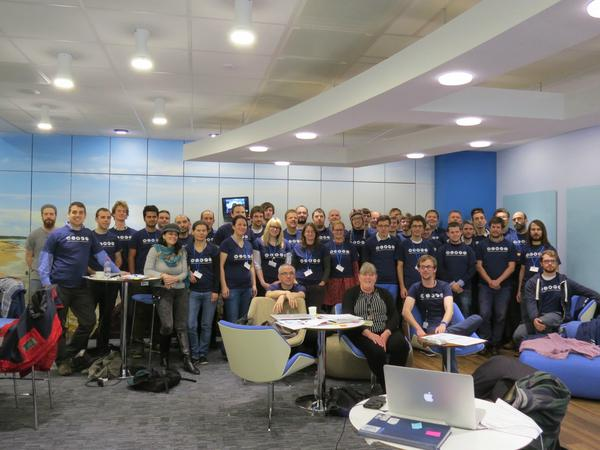

<div class="container" align="center">
  
</div>
<div class="row-fluid">
  <div class="col-sm-6">
    <h3>2015</h3>
    <ul>
      <li><a href="{{site.github_url}}/board/blob/master/minutes/minutes-2015-01-20.md">2015-01-20</a></li>
      <li><a href="{{site.github_url}}/board/blob/master/minutes/minutes-2015-02-03.md">2015-02-03</a></li>
      <li><a href="{{site.github_url}}/board/blob/master/minutes/minutes-2015-02-12.md">2015-02-12</a></li>
      <li><a href="{{site.github_url}}/board/blob/master/minutes/minutes-2015-02-19.md">2015-02-19</a></li>
      <li><a href="{{site.github_url}}/board/blob/master/minutes/minutes-2015-02-26.md">2015-02-26</a></li>
      <li><a href="{{site.github_url}}/board/blob/master/minutes/minutes-2015-03-12.md">2015-03-12</a></li>
      <li><a href="{{site.github_url}}/board/blob/master/minutes/minutes-2015-03-26.md">2015-03-26</a></li>
      <li><a href="{{site.github_url}}/board/blob/master/minutes/minutes-2015-04-09.md">2015-04-09</a></li>
      <li><a href="{{site.github_url}}/board/blob/master/minutes/minutes-2015-04-23.md">2015-04-23</a></li>
      <li><a href="{{site.github_url}}/board/blob/master/minutes/minutes-2015-05-21.md">2015-05-21</a></li>
      <li><a href="{{site.github_url}}/board/blob/master/minutes/minutes-2015-06-18.md">2015-06-18</a></li>
      <li><a href="{{site.github_url}}/board/blob/master/minutes/minutes-2015-07-02.md">2015-07-02</a></li>
      <li><a href="{{site.github_url}}/board/blob/master/minutes/minutes-2015-07-16.md">2015-07-16</a></li>
      <li><a href="{{site.github_url}}/board/blob/master/minutes/minutes-2015-07-30.md">2015-07-30</a></li>
      <li><a href="{{site.github_url}}/board/blob/master/minutes/minutes-2015-08-26.md">2015-08-26</a></li>
    </ul>
    <h3>2014</h3>
    <ul>
      <li><a href="{{site.github_url}}/board/blob/master/minutes/minutes-2014-09-16.md">2014-09-16</a></li>
      <li><a href="{{site.github_url}}/board/blob/master/minutes/minutes-2014-09-30.md">2014-09-30</a></li>
      <li><a href="{{site.github_url}}/board/blob/master/minutes/minutes-2014-10-14.md">2014-10-14</a></li>
      <li><a href="{{site.github_url}}/board/blob/master/minutes/minutes-2014-11-04.md">2014-11-04</a></li>
      <li><a href="{{site.github_url}}/board/blob/master/minutes/minutes-2014-11-18.md">2014-11-18</a></li>
      <li><a href="{{site.github_url}}/board/blob/master/minutes/minutes-2014-12-02.md">2014-12-02</a></li>
      <li><a href="{{site.github_url}}/board/blob/master/minutes/minutes-2014-12-16.md">2014-12-16</a></li>
    </ul>
  </div>
</div>
